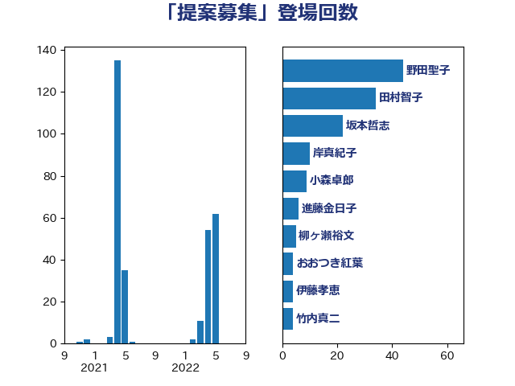

単語「提案募集」

| 野田聖子 | 自由民主党 | 44 回 |
| 田村智子 | 日本共産党 | 34 回 |
| 坂本哲志 | 自由民主党 | 22 回 |
| 岸真紀子 | 立憲民主党 | 10 回 |
| 小森卓郎 | 自由民主党 | 9 回 |
| 進藤金日子 | 自由民主党 | 6 回 |
| 柳ヶ瀬裕文 | 日本維新の会 | 5 回 |
| おおつき紅葉 | 立憲民主党 | 4 回 |
| 伊藤孝恵 | 国民民主党 | 4 回 |
| 竹内真二 | 公明党 | 4 回 |
| 西岡秀子 | 国民民主党 | 4 回 |
| 西田実仁 | 公明党 | 4 回 |
| 三ッ林裕巳 | 自由民主党 | 3 回 |
| 平井卓也 | 自由民主党 | 3 回 |
| 緑川貴士 | 立憲民主党 | 3 回 |
| 伊藤岳 | 日本共産党 | 2 回 |
| 田島麻衣子 | 立憲民主党 | 2 回 |
| 礒崎哲史 | 国民民主党 | 2 回 |
| 美延映夫 | 日本維新の会 | 2 回 |
| 菅義偉 | 自由民主党 | 2 回 |
| 阿部司 | 日本維新の会 | 2 回 |
| 住吉寛紀 | 日本維新の会 | 1 回 |
| 古川俊治 | 自由民主党 | 1 回 |
| 宮路拓馬 | 自由民主党 | 1 回 |
| 石井浩郎 | 自由民主党 | 1 回 |
| 高橋千鶴子 | 日本共産党 | 1 回 |